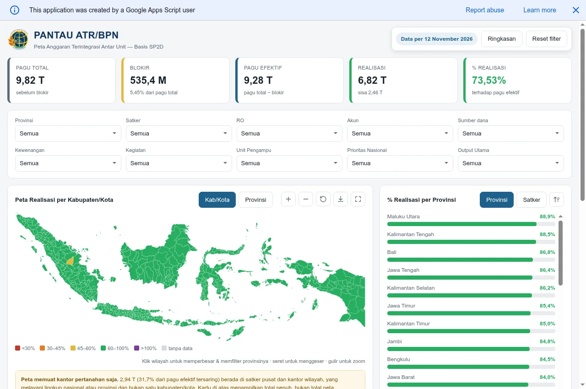
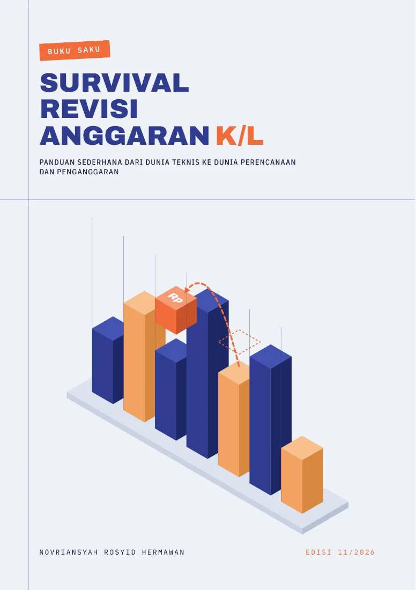

Gunakan toolbar PDF untuk zoom dan berpindah halaman. Jika PDF tidak tampil di perangkatmu, pilih “Buka PDF langsung”.
dan Realisasi Anggaran
Ruang kerja anggaran
Anggaran ATR/BPN, dari pagu sampai realisasi.
Temukan dokumen penyusunan, revisi, dan kelengkapan penganggaran dalam satu tempat.
Lihat katalog dokumenJalankan tahun ini, siapkan tahun depan.
Setiap bulan, tim anggaran menjalankan dan merevisi anggaran tahun ini sambil menyusun anggaran tahun depan. Setiap periode langsung terhubung ke dokumen dan aplikasinya.
-
Januari–Februari
Tahun berjalan
Pelajari DIPA baru, buka blokir, revisi awal, pemutakhiran RPD triwulan I.
-
Maret–Mei
-
Juni–Agustus
-
September–Oktober
-
November
-
Desember
Rentang perencanaan tahun depan adalah pola umum siklus APBN; tanggal pastinya mengikuti surat bersama Kemenkeu dan Bappenas setiap tahun. Sumber: Buku Saku Revisi Anggaran, Bab 14.3.
PANTAU ATR/BPN
Peta Anggaran Terintegrasi Antar Unit
Buka aplikasi untuk melihat data dan filter terbaru.

Tangkapan 16 November 2026 · Buka PANTAUKAWAL ATR/BPN
Kendali Akrual & Kontrak ATR/BPN
Buka KAWAL untuk mengakses aplikasi.
BIDIK ATR/BPN
Bedah dan Identifikasi DIPA
Masuk dengan akun Google yang memiliki akses.
Budget Knowledge Center
Temukan rujukan sebelum mulai bekerja.
Pilih topik atau cari judul pada katalog di bawah. Dokumen tetap dibuka dari sumbernya.
Butuh bantuan memahami topik?
Asisten di sudut kanan bawah membantu mencari rujukan dan menjelaskan isi Buku Saku Revisi Anggaran, lengkap dengan halaman sumber.
Katalog awal memakai tautan yang sudah tersedia di SiPERI. Dokumen privat dari basis pengetahuan Drive belum disalin atau dipublikasikan. Ketersediaan suatu dokumen bukan penetapan bahwa aturannya masih berlaku.
Pekerjaan lebih mudah.Regulasi, standar biaya, template, materi, dan rujukan anggaran.Jelajahi rujukan
Perpustakaan SiPERI · Edisi 11/2026
Buku Saku Revisi Anggaran
Revisi AnggaranDasar, kewenangan, alur revisi, studi kasus, dan checklist dalam satu panduan.Baca panduan

Katalog dokumen
Pagu Anggaran · 2026
Katalog belum dapat dimuat
Periksa koneksi, lalu coba kembali.
Belum ada hasil yang cocok
Coba kata yang lebih singkat, ubah tahap, atau pilih semua tahun. Tautan 2021 belum tersedia dalam katalog ini.
Lihat halaman sumber katalog
Tahun mengikuti halaman sumber. Periksa periode pada dokumen sebelum digunakan. Beberapa halaman dapat memuat dokumen dari tahun lain.